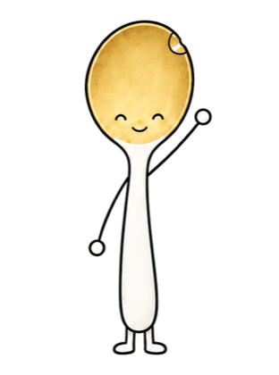
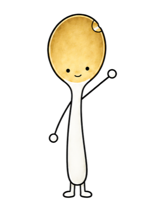
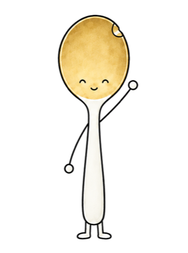
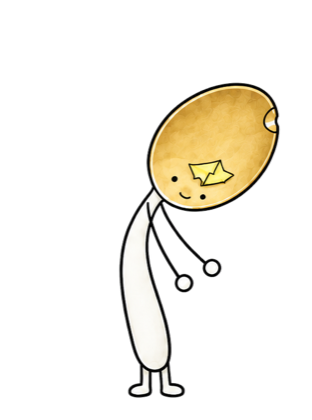

2026.09
근무처 업무
근무처 업무
신청 창구 두 곳의 명단을 한 시트로
체험 프로그램 신청이 두 곳(직접 운영하는 신청 페이지, 협력자 페이지)으로 들어와서, 스크립트가 신청자를 한 시트로 합치고 입금 확인과 상태를 표시하게 만들었습니다.
9/19 기준 활성 31팀인원이 적힌 30팀 합계 118명가게·회사에서 매일 반복되는 귀찮은 일을
AI로 하나씩 덜어 드립니다.
여기 있는 건 전부 그냥 가져가셔도 돼요.

인스타·스레드에 올린 내용의 원문을 전부 여기 모았습니다. 펼쳐서 [ ] 안만 바꾸고 ChatGPT나 제미나이에 붙여넣으면 됩니다.

가격·위치·주차·시간처럼 같은 질문에 매번 처음부터 답하고 있다면
보내기 전에는 꼭 한 번 읽어 보세요. AI가 가게 정보에 없는 말을 지어낼 때가 있습니다.
칭찬 리뷰, 아쉬운 리뷰, AI 티 빼기, 반복 문의, 일주일 정리
손님 이름이나 전화번호는 지우고 붙여넣으세요.
돈 내기 전에 무료로 먼저 써 보세요. 아래 내용은 각 회사 공식 페이지에서 확인한 것입니다(2026년 10월 1일 기준).
출처: ChatGPT 가격 페이지
출처: Gemini 고객센터 · 이미지 도움말
AI는 모르는 것도 그럴듯하게 말할 때가 있습니다. 숫자·날짜·법·돈과 관련된 답은 꼭 한 번 확인하세요. 부탁 끝에 "모르면 모른다고 말해 줘"를 붙이면 도움이 됩니다.
처음 보면 막히는 말들을 쉬운 말로 바꿔 두었습니다.
직접 AI로 만들어 본 것들의 기록입니다. 잘 된 것도, 고친 것도 그대로 적습니다.

체험 프로그램 신청이 두 곳(직접 운영하는 신청 페이지, 협력자 페이지)으로 들어와서, 스크립트가 신청자를 한 시트로 합치고 입금 확인과 상태를 표시하게 만들었습니다.
9/19 기준 활성 31팀인원이 적힌 30팀 합계 118명회차마다 길 안내가 담긴 문자 본문을 자동으로 만들고, 연결한 휴대폰으로 발송했습니다. 한 번 다른 사람에게 잘못 간 적이 있어서, 그 뒤로는 보내기 직전에 앱·받는 사람·본문 세 가지를 확인하는 단계를 넣었습니다.
9/22 8명 발송, 실패 0건숏폼 영상 한 편을 채널마다 맞춰 틱톡 → 인스타·페이스북 → 스레드 → 네이버 클립 순서로 올렸습니다.
4개 채널 순차 게시 23분맥에는 한글 프로그램이 없어서, 공공기관 제출용 결과보고서를 AI와 함께 한글 문서(HWPX) 형식으로 직접 만들었습니다. 기존 양식의 글꼴·표 서식을 그대로 옮겨 썼습니다.
전체본 27쪽 · 축약본 16쪽 · 붙임 12쪽처음엔 흔한 귀여운 숟가락이었습니다. 기억에 남는 캐릭터 58개를 같은 기준으로 재 보고(선 굵기, 색 수, 얼굴, 몸짓), 흰 몸·얇은 손그림 선·놋빛 오목면·찌그러진 자국으로 정했습니다. 머리와 몸이 따로 놀아 어색하다는 의견을 받고, 포즈 그림을 갈아 끼우는 방식으로 다시 만들었습니다.
레퍼런스 58개 측정4번 고쳐 확정포즈 12장
경북 안동에서 일합니다. 어려운 AI를 그 자리에서 바로 따라 할 수 있게, 한 번에 한 가지씩 쉽게 알려 드리는 일을 합니다.